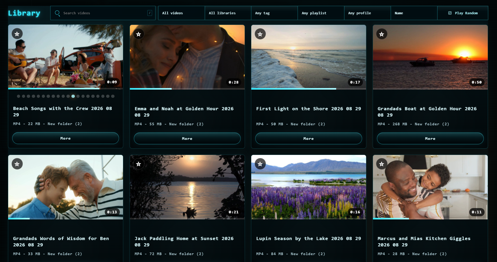
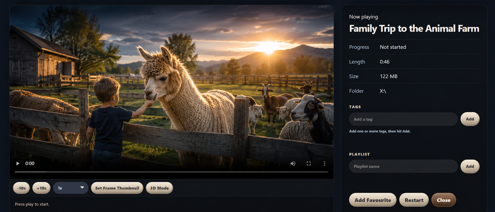
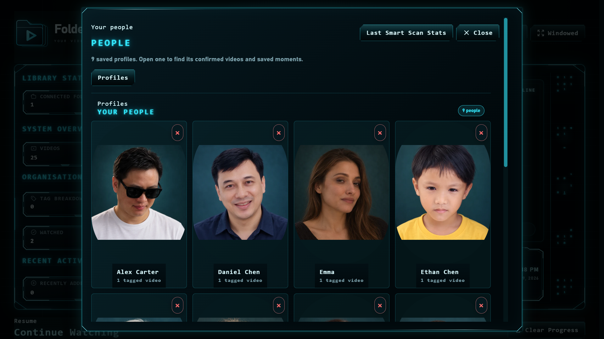

01▢
Choose your folder
Add the folders and connected drives where your videos already live.
Turn the videos on your computer and connected drives into a visual library. Less searching through folders. More enjoying what’s already yours.
Free for up to 100 videos · One folder · No desktop account

FolderStream walkthrough
See the visual library, Sci-Fi HUD, and People Recognition in action.
A little order. A lot more enjoyment.
Keep your files where they are. Give yourself a better way to find, organise, and watch them.
Add the folders and connected drives where your videos already live.
Thumbnails and preview frames make videos easier to recognise.
Save favourites, organise playlists, and pick up where you left off.
Built around your collection
▣ Visual browsing
Thumbnails and preview frames help you see what’s inside a video without opening every file.

◇ Personal organisation
Search, tag, and collect the videos that belong together. Your trips. Your people. Your projects.
◷ Continue Watching
Return to unfinished videos with your watch progress already there.
Local, optional People Recognition
Opt-in passive face detection uses Smart Scan to check new or changed videos locally after thumbnails are ready. It suggests face groups you can review, name, correct, or leave alone.

Free to start. Simple to upgrade.
Start with Free. Choose Pro when you’re ready for more videos, more folders, and the full set of library tools.
FolderStream Free
Free
Get to know your library again.
Download Free for WindowsStart with a small collection. No desktop account required.
FolderStream Pro Room to grow
NZ$42.99 one-time
Your full collection. No subscription.
Get FolderStream Pro →Final taxes and total are shown at checkout.